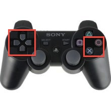

An array of audio sources for a scene is returned from the GetComponents(AudioSource) method. Each game scene calls the appropriate audio source's play method in code to play a sound based on the state of the game. The source of music is an audio source with the loop property set to true. The mute method of an audio source is used to disable sound.
All actionable events provide visual and audio feedback. Moreover, plants that are growing display a grow animation. Feedback is given to the player regarding how to play with game hints as well as the red bar under plants that have been placed in the incorrect topsoil.
Each plant uses a series of 6 images for animation to simulate growth.
The top yellow boarder and bottom blue boarder as well as the card slots use solid color diffuse shaders. The board uses a textured diffuse shader.
A FSM is used for the game AI. As the difficulty is increased randomness is reduce and reaction time is increased.
The kuler website is used to incorporate colors in the game.
Gimp and MS Paint were used to design the graphics. Graphics were placed on buttons or used as an object texture such as the game board.
The game is deployed as a Unity web-player and can be played in a web browser including Chrome.
The game contains a custom designed game loop which sequences the game objects to be executed with each game update.
The game is viewed as a 2D orthogonal parallel plan view projection.
No code is needed for mouse functionality. However, special code is added to all scenes to support controllers. The Input.GetButton method is used to capture a button press. Based on the game item that has focus, the corresponding code is executed. Per the controller below, the four digital buttons on the left are used to move the focus to different game objects. The x button on the right is used for selection and the o button is occasionally used to reverse a selection.
The UI is developed to be viewed in 854 x 480 resolution.
The game contains 150+ lines of c# code. The remaining code is done in Javascipt.
The game document is designed in HTML and can be viewed on the game's website.